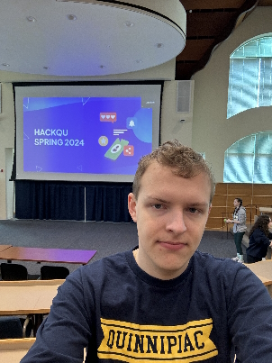
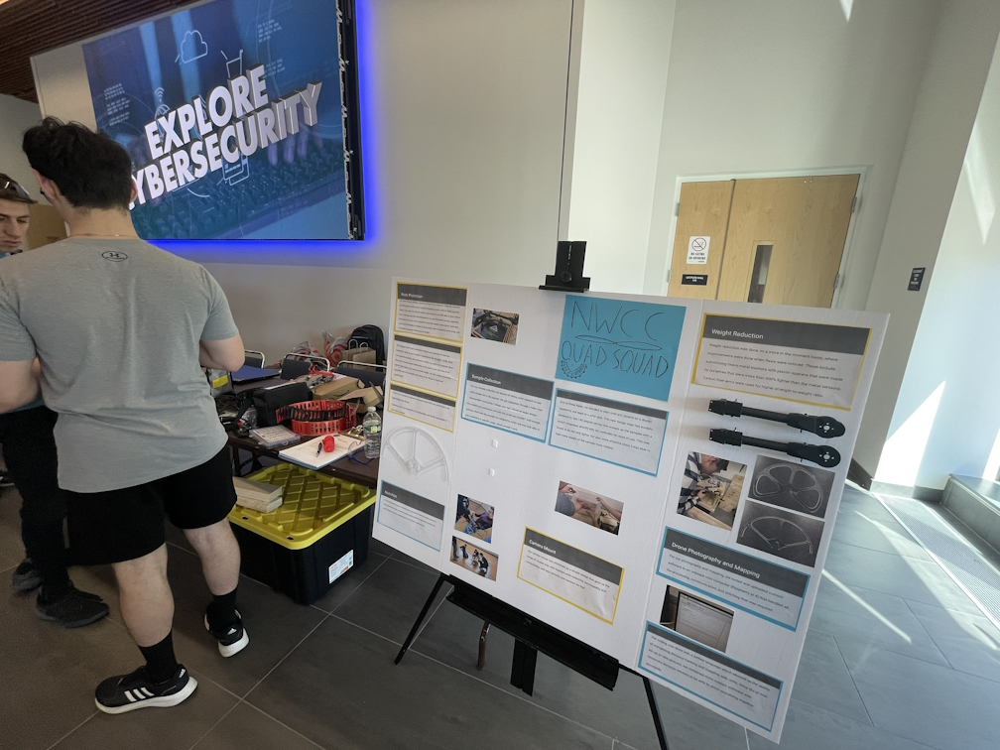

My Projects
Here will contain a list of all of the projects that involved my programming and developing skills that I participated in throughout my college career:
Quinnipiac University Spring 2024 Hackathon
Repo LinkThe project involved having to create a solution to the theme "Accessibility". The project we made was a Java application created using the Swing library that communicates over a TCP network. It illustrates how blind people can cooperate with deaf people in which one computer takes the role of having an interface suitable for blind people while the other computer has a UI interface. The way the program works is that two players have to collaborate and cooperate in a game of Two Truths and a Lie, and one of the players is blind and the other is deaf. The deaf person would see 3 buttons with each of them containing a dinosaur with a different color. Whenever the person clicks on a dinosaur, the blind person will hear a message with what the dinosaur is saying. The blind person will hear all of the dinosaurs one by one and after the person hears the dinosaur that lies, the person would press space and then the deaf person will get a message indicating that the button was pressed. The deaf person would choose the correct answer and then a message will pop up saying the answer is correct/incorrect and the corresponding sound effect will play on the blind person's end.
Four In A row SER210 assignment
This assignment is one of the projects I had to complete in my SER 210 class I took in Quinnipiac University in Spring 2024. This was the first application I have made using Android Studio, and it was a four-in-a-row game, similar to tic-tac-toe, and
2022-2023 NASA CT Quadcopter Challenge
Occured in the 2022-2023 school year when I was a student at Northwestern CT Community College. The project involved applying coding skills to real life situations. I was the lead programmer within a team of four people, and I was responsible for making the User Interface of a Raspberry PI that my team had purchased and it would interact with many of the key features implemented in the Quadcopter drone my team has been using. My program allows for the Quadcopter's camera to take pictures and videos, as well as getting the altitude of the quadcopter and the distance from the ground.
